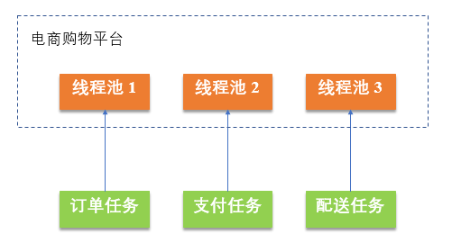
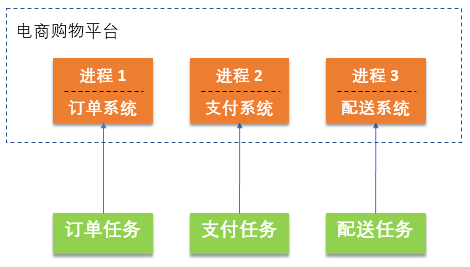
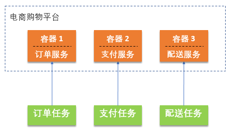
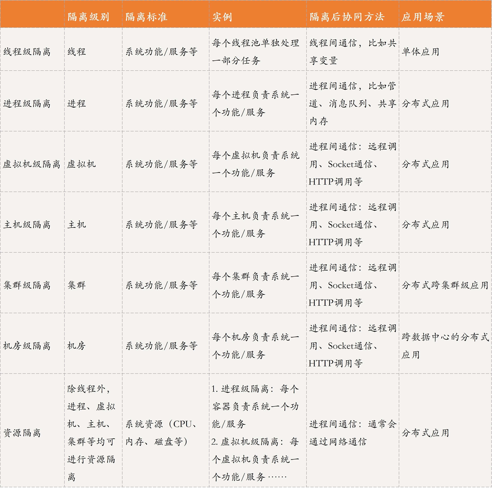
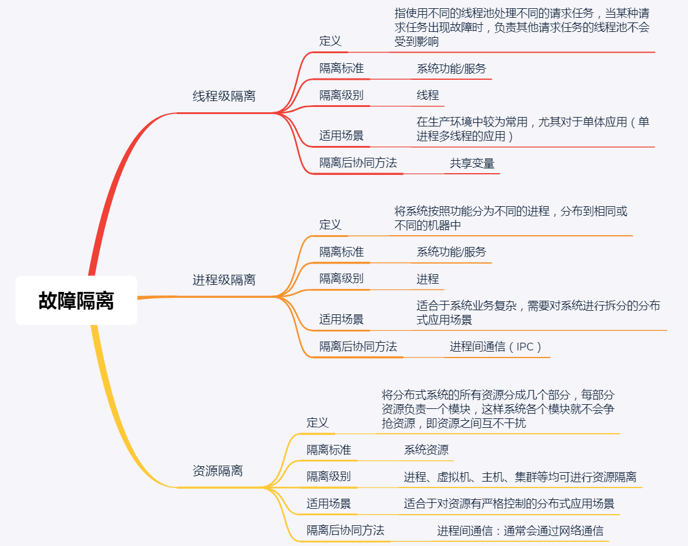

- 00 开篇词 四纵四横，带你透彻理解分布式技术.md.html
- 01 分布式缘何而起：从单兵，到游击队，到集团军.md.html
- 02 分布式系统的指标：啥是分布式的三围.md.html
- 03 分布式互斥：有你没我，有我没你.md.html
- 04 分布式选举：国不可一日无君.md.html
- 05 分布式共识：存异求同.md.html
- 06 分布式事务：All or nothing.md.html
- 07 分布式锁：关键重地，非请勿入.md.html
- 08 分布式技术是如何引爆人工智能的？.md.html
- 09 分布式体系结构之集中式结构：一人在上，万人在下.md.html
- 10 分布式体系结构之非集中式结构：众生平等.md.html
- 11 分布式调度架构之单体调度：物质文明、精神文明一手抓.md.html
- 12 分布式调度架构之两层调度：物质文明、精神文明两手抓.md.html
- 13 分布式调度架构之共享状态调度：物质文明、精神文明多手协商抓.md.html
- 14 答疑篇：分布式事务与分布式锁相关问题.md.html
- 15 分布式计算模式之MR：一门同流合污的艺术.md.html
- 16 分布式计算模式之Stream：一门背锅的艺术.md.html
- 17 分布式计算模式之Actor：一门甩锅的艺术.md.html
- 18 分布式计算模式之流水线：你方唱罢我登场.md.html
- 19 分布式通信之远程调用：我是你的千里眼.md.html
- 20 分布式通信之发布订阅：送货上门.md.html
- 21 分布式通信之消息队列：货物自取.md.html
- 22 答疑篇：分布式体系架构与分布式计算相关问题.md.html
- 23 CAP理论：这顶帽子我不想要.md.html
- 24 分布式数据存储系统之三要素：顾客、导购与货架.md.html
- 25 数据分布方式之哈希与一致性哈希：“掐指一算”与“掐指两算”的事.md.html
- 26 分布式数据复制技术：分身有术.md.html
- 27 分布式数据之缓存技术：“身手钥钱”随身带.md.html
- 28 分布式高可靠之负载均衡：不患寡，而患不均.md.html
- 29 分布式高可靠之流量控制：大禹治水，在疏不在堵.md.html
- 30 分布式高可用之故障隔离：当断不断，反受其乱.md.html
- 31 分布式高可用之故障恢复：知错能改，善莫大焉.md.html
- 32 答疑篇：如何判断并解决网络分区问题？.md.html
- 33 知识串联：以购买火车票的流程串联分布式核心技术.md.html
- 34 搭建一个分布式实验环境：纸上得来终觉浅，绝知此事要躬行.md.html
- 特别放送 Jackey：寄语天涯客，轻寒底用愁.md.html
- 特别放送 分布式下的一致性杂谈.md.html
- 特别放送 崔新：追根溯源，拨开云雾见青天.md.html
- 特别放送 徐志强：学习这件事儿，不到长城非好汉.md.html
- 特别放送 那些你不能错过的分布式系统论文.md.html
- 结束语 为什么说提升职业竞争力要从尊重、诚实开始？.md.html
- 捐赠
30 分布式高可用之故障隔离：当断不断，反受其乱
你好，我是聂鹏程。今天，我来继续带你打卡分布式核心技术。
在前面两篇文章中，我带你一起学习了分布式系统高可靠的关键技术，包括分布式负载均衡和流量控制。除了高可靠，在实际生产中，分布式系统的高可用问题也极其重要。
比如，在双十一的抢购高峰期，如果分布式系统不能满足高可用的特性，那么当大量用户同时抢购时就可能导致系统崩溃，无法提供服务，导致大量用户流失。
因此，在接下来的两篇文章，我将从故障隔离和恢复机制这两项关键技术入手，和你一起学习如何保证分布式系统的高可用。
今天，我们就先一起打卡分布式高可用中的故障隔离吧。
什么是故障隔离？
从字面意思来看，故障隔离就是，把故障通过某种方式与其他正常模块进行隔离，以保证某一模块出现故障后，不会影响其他模块。
其实，我们生活有很多故障隔离的例子，比如交通。一辆车就类似于分布式系统中的一个模块，当一辆车在高速公路上出现故障后，我们通常会将其停靠在紧急车道，或者在其前后设置故障指示牌，以防止其他车辆与其相撞，引起更大的交通事故。这种将故障车辆停靠在路边紧急车道或设置故障指标牌的方法，就是一种故障隔离。
现在我们回到分布式系统，故障隔离，就是采用一定的策略，以实现当某个模块故障时，不会影响其他模块继续提供服务，以保证整个系统的可用性。所以说，故障隔离，可以避免分布式系统出现大规模的故障，甚至是瘫痪，降低损失。
在分布式系统中，要实现故障隔离，通常需要在进行系统设计时，提前对可能出现的故障进行预防，以使得在出现故障后能实现故障隔离。此外，由于是提前设计预防的，因此故障隔离还可以帮助我们快速定位故障点。
也就是说，分布式系统中的故障隔离策略是在系统设计时就进行考虑，从预防的角度来实现故障发生时，该模块故障不会影响其他模块。因此，我今天与你介绍的故障隔离策略，是整个系统设计时，从高可用这个维度进行设计的策略。
好了，理解了故障隔离为什么可以提高分布式系统的可用性以后，我们再来看看实现故障隔离有哪些常见策略吧。
分布式故障隔离策略
分布式系统中的故障隔离策略有很多，大体上可以从两个维度来划分：
- 一类是以系统功能模块为粒度进行隔离。比如，通过系统功能/服务划分，将系统分为多个功能/服务模块，各个功能/服务模块之间实现松耦合，即一个功能/服务模块出现故障，不会影响其他功能/服务模块，根据功能模块或服务由线程执行还是进程执行，通常分为线程级隔离、进程级隔离。
- 另一类是，通过资源隔离来实现。比如，系统中各个模块拥有自己独立的资源，不会发生资源争抢，从而大大提升系统性能。根据资源所属粒度，通常包括进程级隔离（比如采用容器隔离）、虚拟机隔离、服务器隔离和机房隔离等。
基于这个分类，接下来，我将为你讲述三种比较常见的故障隔离策略，包括以功能模块为粒度进行隔离的线程级隔离和进程级隔离，以及以资源为隔离维度的资源隔离。
线程级隔离
线程级故障隔离，是指使用不同的线程池处理不同的请求任务。当某种请求任务出现故障时，负责其他请求任务的线程池不会受到影响，即会继续提供服务，从而实现故障的隔离。
如图所示，以电商购物平台为例，假设初期运行在单台机器的一个进程中，在这个进程中有三个线程池，分别负责订单任务、支付任务和配送任务。这样，当订单请求出现故障时，不会影响已下单用户的支付和仓库配送服务。

线程级的故障隔离策略，在生产环境中较为常用，尤其对于单体应用（单进程多线程的应用）。在单体应用场景下，应用被单个进程执行，但单进程中包括多个线程，因此该场景下，只需要实现线程级隔离即可，实现简单、效果好，因此是一种很常用的方式。
系统实现线程级隔离后，线程间的通信通常使用共享变量来实现。简单地说，共享变量就是一个进程中的全局变量，在进程的各个线程间可以同时使用。这种通信方式，实现简单且效果明显。
进程级隔离
随着业务逐渐扩大，业务系统也会越来越复杂，单体应用可能无法满足公司与用户的需求，这时候就需要对系统进行拆分。
一种常用的方式就是，将系统按照功能分为不同的进程，分布到相同或不同的机器中。如果系统的进程分布到不同机器上的话，从资源的角度来看，也可以说成是主机级的故障隔离。因为从另一个层面看，系统确实分布到了不同机器上，当某个机器出现故障时，不会对其他机器造成影响。
如图所示，电商购物平台可以分为订单系统、支付系统和配送系统三部分。这三个子系统可以采用三个不同的进程来服务用户。
这就是一个进程级的故障隔离方案，即不同的子系统对应不同的进程，某一个子系统出现故障，都不会导致其他系统不可用。

系统实现进程级隔离后，进程间的协同必须通过进程间通信（IPC）来实现。进程间通信有很多方式，大体可以分为以下两类：
- 如果进程都在同一台机器上，则可以通过管道、消息队列、信号量、共享内存等方式，来实现；
- 如果进程分布在不同机器上，则可以通过远程调用来实现，你可以再回顾下第19篇文章中的相关内容。
进程级故障隔离，目前在分布式应用中应用广泛，比如常见的电商、火车票购买等业务都可以采用。
资源隔离
前面介绍的是以服务或功能模块为粒度进行隔离的，下面我们一起看下从资源角度进行隔离是怎么做的？
简单来说，资源隔离就是将分布式系统的所有资源分成几个部分，每部分资源负责一个模块，这样系统各个模块就不会争抢资源，即资源之间互不干扰。这种方式不仅可以提高硬件资源利用率，也便于系统的维护与管理，可以大幅提升系统性能。
微服务就是一个典型的例子。当前，很多公司都在将自己的业务系统微服务化，比如亚马逊、阿里、华为、微软等。在微服务的理念中，是尽可能将服务最小化，服务与服务之间进行解耦合，包括运行环境的相互隔离等。比如，现在通常采用容器进行隔离，我在第9篇文章中分享的Mesos、Kubernetes等可实现容器管理与调度，而Mesos和Kuberntes的上层应用很多都是微服务。
实际上，在微服务框架中，一个服务通常对应一个容器，而一个容器其实就是操作系统中一个进程，不同容器负责不同的服务，就类似于刚才所讲的：不同进程负责系统不同的功能模块。
如图所示，如果将电商购物平台微服务化，则可以启动三个容器，分别负责订单服务、支付服务和配送服务。一个容器对应一个进程，因此微服务框架本质上还是一种进程级故障隔离策略。

但与进程级隔离不同的是，微服务框架采用容器进行故障隔离。容器虽然本质上是操作系统的一个进程，但具备普通进程不具备的特性，比如资源隔离。
- 一个普通进程有很大的计算或内存需求时，可能会占满物理机上所有的CPU、内存资源，导致其他进程没有资源可用，引发进程间的资源争夺；
- 但容器可以实现资源限制，让每个容器占用的资源都有一个上限，比如CPU、内存，均会设置一个上限值，这个上限值限定了该容器的处理能力，就好比一台服务器具有资源上限值一样。因此，一个容器使用的资源不会影响其他容器的资源，从而避免资源争抢，提高性能。
那到底什么是容器呢？ 容器是一种虚拟化技术，可以为应用提供一整套运行环境。容器通过限制自身使用的资源来实现资源隔离，从而让容器就像一个个的“集装箱”：容量固定，存放着任意的物品。
目前，比较常用的容器是Docker。Docker主要使用Linux内核中的Linux Cgroups模块来设置容器的资源上限，包括CPU、内存、磁盘、网络带宽等。通过Cgroups模块，容器间就形成了资源隔离，从而避免了容器间的资源争夺，提升了系统性能。
通过容器进行资源隔离后，需要容器进行网络配置来进行容器间的通信。比如，Docker默认是通过建立虚拟网桥来实现容器间通信的。如果你想深入了解容器网络配置相关的内容，可以自行查阅Docker官方文档中网络部分的内容。
除了容器级别的资源隔离，虚拟机级别的隔离也是资源隔离的一种常用手段，一台物理机可以安装多个虚拟机，每个虚拟机都会分配一定的资源，即进行资源隔离。除此之外，主机级别的隔离也可以说是一种资源隔离，每台机器的资源是独享的，不会与其他机器发生资源争夺，从而做到资源隔离。
除了以上所讲到的故障隔离策略，其实还有一些更粗粒度的隔离策略，比如集群隔离、机房隔离等，这些策略主要是跨集群或跨地域的隔离策略。这些粗粒度的隔离策略，不仅可以根据系统功能/服务等维度对系统进行划分，比如每个功能/服务由一个集群或一个机房单独负责，而且也是一种资源隔离策略，即集群间或机房间资源互相隔离，不会发生资源争夺，互不影响。
故障隔离策略综合对比
以上，就是分布式应用中常用的几种故障隔离策略了。接下来，我再通过一个表格进行对比分析，以便于你理解和记忆。

知识扩展：从用户角度看，有哪些常用的故障隔离方案？
无论是按照功能/服务划分模块，实现进程级、虚拟机级等故障隔离，还是按照系统资源进行故障隔离，它们都是一种针对服务方的故障隔离手段。除此之外，还有一种故障隔离策略是，针对用户的，即用户级别的故障隔离。
用户级别的故障隔离是指，将不同用户分开，当系统出现故障时，只影响部分用户，而不是全体用户。比如，发布产品前大多会有一个“灰度发布”过程， 就是先发布给一小部分用户进行测试，如果没问题再大规模发布；如果有问题也只是影响一小部分用户。这就是一种典型的用户级别的故障隔离。
常用的用户级别故障隔离策略，有数据分片、负载均衡等。你可以再回顾下第25篇文章中关于数据分片，以及第28篇文章中关于负载均衡技术的相关内容。
以数据分片为例，系统可以将不同用户的数据存储到不同的数据库，即一个数据库只存储部分用户的信息。这样当某个数据库出现故障时，仅影响该故障数据库存储的用户，而不会影响全部用户。
负载均衡也是这个道理。当处理请求的某个服务器出现故障时，只影响该故障服务器负责的用户请求，而不会影响其他服务器负责的用户请求。
总结
今天，我主要带你学习了分布式高可用技术中的故障隔离技术。
首先，我以汽车故障为例，带你了解了故障隔离的概念，并引出分布式系统中的故障隔离。分布式系统中的故障隔离技术是，在进行分布式系统可用性设计时，考虑故障隔离的设计，也就是提前预防或避免出现故障后对整个系统造成影响。
然后，我与你介绍了常见的故障隔离策略，包括线程级隔离、进程级隔离和资源隔离策略。其中，线程级隔离和进程级隔离是从对功能/服务模块进行隔离的维度进行划分的，借助了系统本身对线程或进程的隔离机制实现故障隔离；资源隔离是从资源的维度进行隔离，主要通过容器、服务器、集群、机房等物理资源维度进行隔离。
最后，我再通过一张思维导图来归纳一下今天的核心知识点吧。

加油，相信通过今天的学习，你对分布式系统中的故障隔离技术有了一定的理解，也可以进一步对容器、虚拟机等的隔离技术进行深入分析了。加油，行动起来吧！
思考题
分布式系统难免会发生故障，那么评判一个系统故障的指标有哪些呢？或者说通过哪些指标可以判断故障的健康度呢？
我是聂鹏程，感谢你的收听，欢迎你在评论区给我留言分享你的观点，也欢迎你把这篇文章分享给更多的朋友一起阅读。我们下期再会！
© 2019 - 2023 Liangliang Lee. Powered by gin and hexo-theme-book.